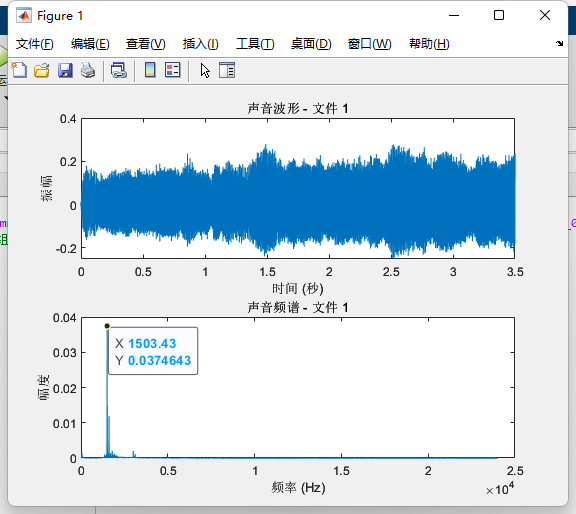
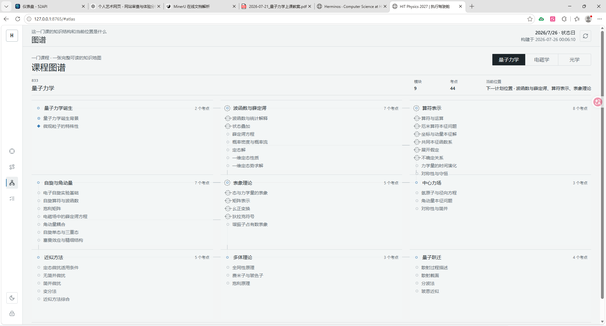
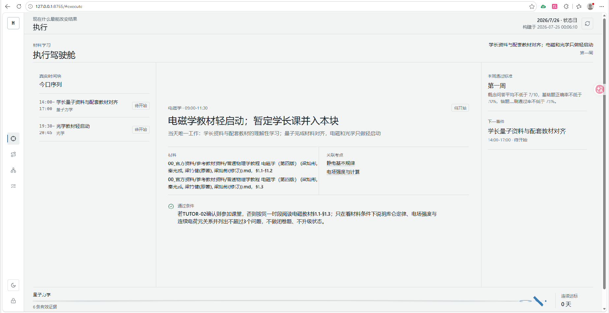
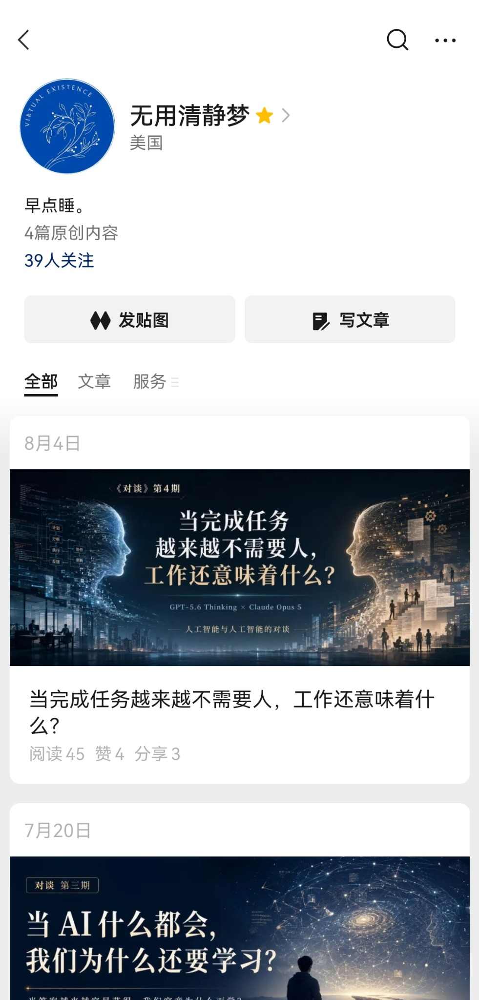
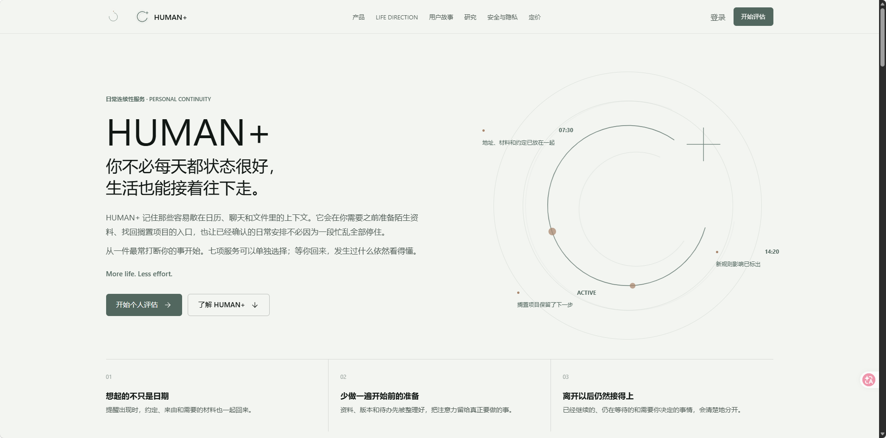

01
乐音研究
从真实录音出发，用频域分析理解声音。

录音波形 → 频域结果频谱主峰约 1.50 kHz
大二实验竞赛 · 历史结果
从研究一个小问题，到构建工具、组织学习和表达思考。
从真实录音出发，用频域分析理解声音。

大二实验竞赛 · 历史结果
从搭建原型，转向积累人—Agent 协作方法。

把知识地图、学习状态与执行任务接起来。


把对 AI 与学习的思考，写下来、表达出来。

